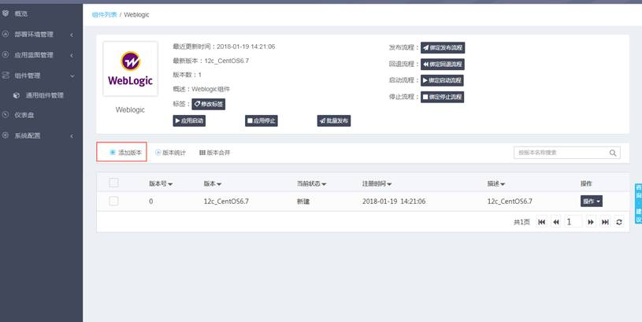
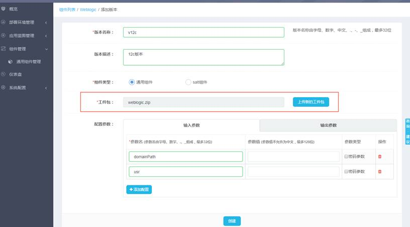

在组件列表中点击组件名称进入组件详情页面，或者点击组件列表中每一条组件记录对应的“添加版本”，即可为该组件添加版本，如下图所示。

添加版本时，必填项是版本名称、工件包，其中工件包可以单击“选择已有工件包”从弹出的搜索栏中选择已有工件包，也可以点击“上传新的工件包”按钮，新建一个工件包。在这里上传的工件包从系统配置―>工件管理中也可以查询到。组件的配置参数可以现在填写，也可以在添加完版本之后更新版本的时候填写。点击创建按钮即可完成版本的添加。
